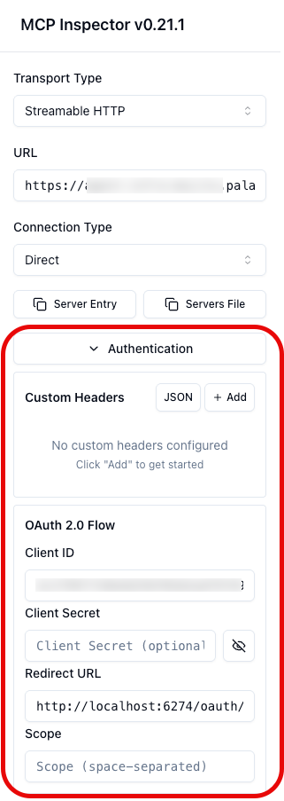
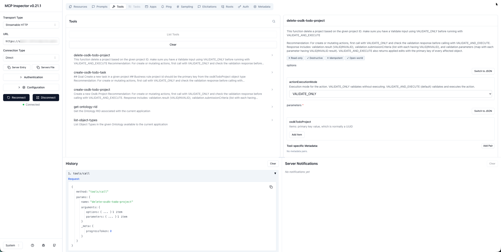

MCP Inspector â is an open-source developer tool for testing and debugging MCP servers. It provides an interactive interface where you can connect to any MCP server, browse available tools, execute them with custom inputs, and inspect the responses. This makes it useful for verifying that your Ontology MCP (OMCP) server is configured correctly before connecting it to an AI agent.
Before using MCP Inspector with your Ontology MCP server, ensure that you have enabled Ontology MCP for your application in Developer Console. Refer to Getting started for setup instructions.
To launch MCP Inspector with your Ontology MCP server, navigate to the MCP page of your application in Developer Console and follow the instructions provided for running MCP Inspector. This page displays the connection configuration specific to your application.
Once the MCP inspector application launches, make sure to expand the Authentication section and add the client ID before selecting Connect. Note that you may also need to add a client secret if you are using a confidential client.
:::callout{theme="neutral"} It may take a few seconds before tools are available during connection. :::

Once MCP Inspector is connected to your Ontology MCP server, you can use it to list, execute, and inspect the tools exposed by your application.
Select the Tools tab in MCP Inspector to view all tools exposed by your Ontology MCP server. Each tool displays its name and description. This list should match the ontology resources you configured in your application's restrictions, including search tools, action tools, and query tools.
If a tool is missing from the list, verify that the corresponding ontology resource is included in your application restrictions.

Use the History section in the Tools tab to view a log of all requests made to your MCP server, including tool executions and their responses. This can help you track the sequence of interactions and identify any errors or unexpected behavior in your tools.
Follow the steps below to execute a tool:
After running a tool, MCP Inspector displays the response in the Results panel.
You can inspect the following:
Use the response details to verify that your tools return the expected data, and to diagnose issues with tool configurations or permissions.
Currently, Ontology MCP does not support prompts or resources, so the Prompts and Resources tabs in MCP inspector will display an empty list.